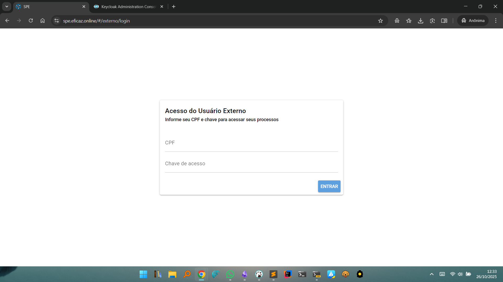

Login do Usuário Externo
O Acesso do Usuário Externo no SPE permite que pessoas externas à instituição, como partes interessadas ou representantes legais, acessem processos e documentos restritos nos quais possuem participação, mediante autenticação simples.
Estrutura da Tela de Login Externo
Formulário de Acesso

- O usuário deve informar obrigatoriamente:
- CPF: Cadastro de Pessoa Física, utilizado para identificar o usuário externo vinculado ao processo.
- Chave de acesso: Código único fornecido pelo sistema ou pela instituição responsável no momento do cadastramento como parte em um processo restrito.
- Botão ENTRAR: Após preencher ambos os campos, clique em ENTRAR para acessar os processos restritos vinculados ao CPF e à chave fornecidos.
Fluxo de Utilização
- Digite o CPF no campo correspondente.
- Insira a chave de acesso recebida por e-mail, documento oficial ou responsável pela tramitação processual.
- Clique em ENTRAR.
- Caso os dados estejam corretos, será permitida a visualização somente dos processos nos quais o usuário tem permissão de acesso.
- Em caso de erro nos dados informados, o sistema apresentará mensagem de não autorização ou de dados inválidos.
Observações
- Este tipo de login é destinado apenas a usuários externos (não servidores), como partes interessadas que não possuem usuário interno cadastrado.
- A chave de acesso é fundamental para garantir a segurança e restrição adequada das informações processuais.
- O usuário externo deve zelar pelo sigilo da sua chave de acesso, não a compartilhando com terceiros para evitar acessos indevidos.
Voltar